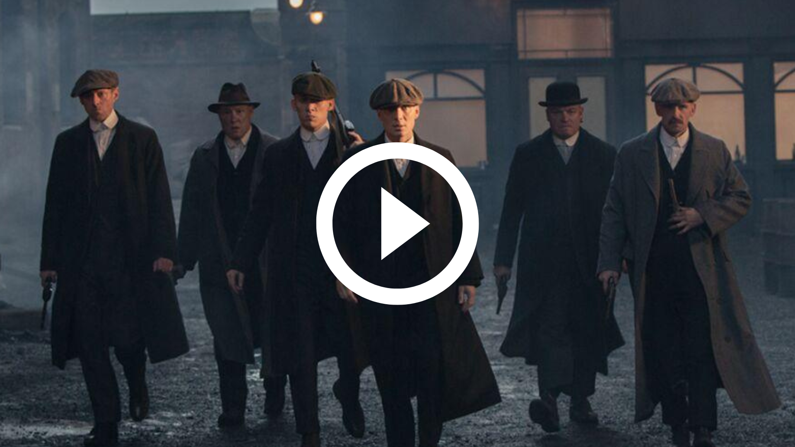
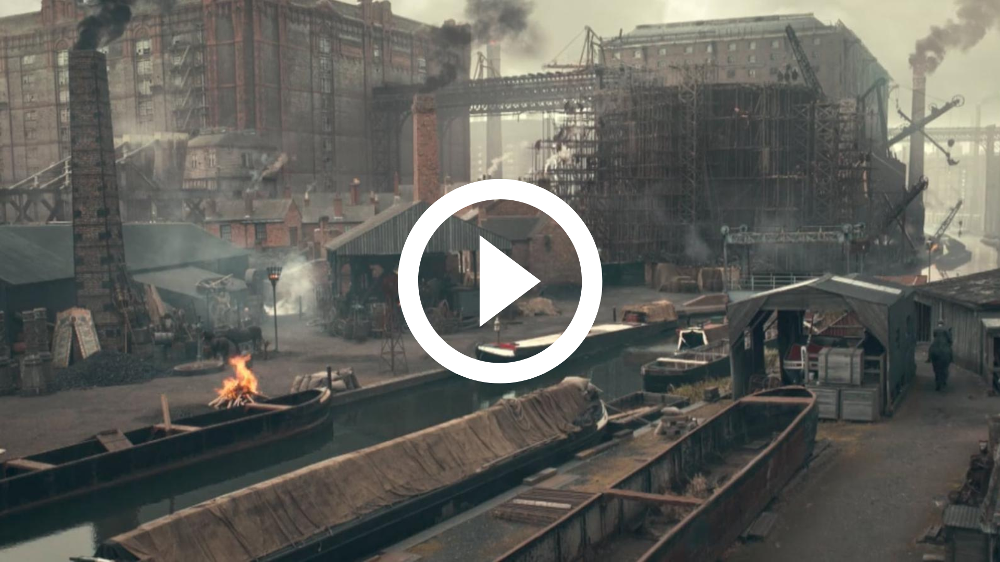
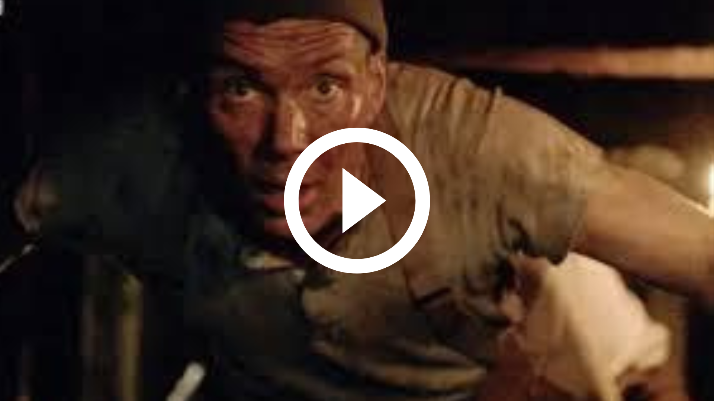
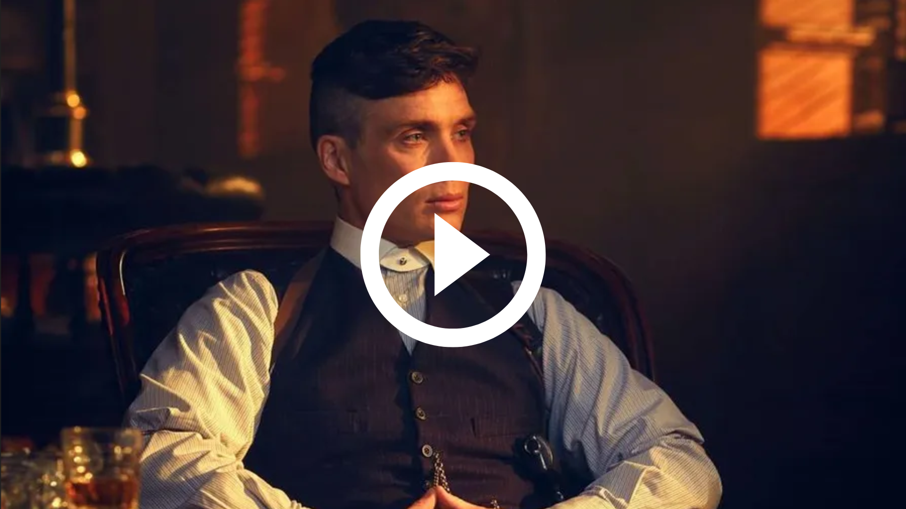
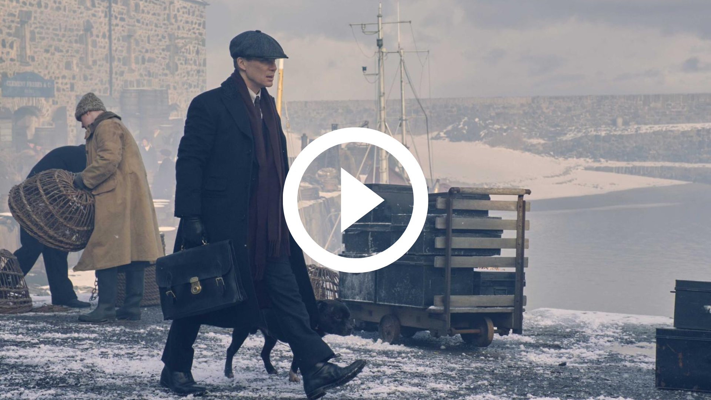
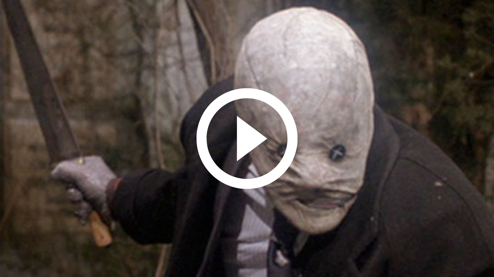

Season 7 "Death Always Wins" takes place shortly after the end of the previous season. This season is set in a real historical context, the arrival of the Nazi party in England shortly before the Second World War. This season will recurrently explore the past with many flashbacks. Redemption, sacrifice and relationship will be this season main themes.
Season 7 is the very last season of the series, no sequel will be made.
Produced by Adrien R, Enzo S, Ivan C, Hippolyte D
Episode 1: He's Back
Tommy, now retired from the gangster life, tries to rebuild himself in an unknown place. But he learns from a mysterious stranger that Oswald Mosley has embarked on a new campaign to become Prime Minister and decides to return to Birmingham to try to stop him.

Episode 2: Rebuilding alliances
Tommy contacts his former allies to prepare an offensive against Mosley. He has a powerful new ally: Catherine Gouriou, a formidable assassin who wants to kill Mosley (because he doesn't know his irregular verbs correctly). When Tommy first meets Catherine, he said, "I guess assassins can be picky about their targets, Mosley's knowledge of english irregular verbs must be really lousy."

Episode 3: Factory rumble
Tommy and his team manage to impede Mosley's plot of taking over a strategic factory. At the same time, Tommy is dealing with personal problems, he learned that his wife Lizzy is seriously ill.

Episode 4: Ghosts of the Past
With the election campaign in full swing, Tommy discovers a connection between Mosley and a group of Irish terrorists. He sets up a risky plan to neutralize them and avenge Polly's death. He begins to doubt his sanity because of realistic flashbacks to the past

Episode 5: Mastermind
Tommy's plan worked, but he was badly injured during the last confrontation. Lizzy dies soon after and Tommy must deal with grief while recovering from his injuries. He invents a plan to stop the extreme right once and for all.

Episode 6: Redemption comes through sacrifice
Tommy Shelby faces his inner demons and decides to sacrifice himself to prevent Mosley from gaining power. He organizes a suicide bombing at a meeting of the politician, killing Mosley and sacrificing himself to save England from the extreme right. At Tommy's funeral, it will be said that he had an explosive temperament...

Episode 7: The Mask
1 year after the bombing, a mysterious character has appeared: The Mask. He wears a white mask that completely covers his face, hiding his identity. He undertakes attacks exclusively on the Nazi party, works in the shadows, and leaves no trace behind him. No one knows who he really is or where he came from, but it is said that he is a former Peaky Blinders and that he is very intelligent. His hands are burned, as if he had escaped... from an explosion for example...